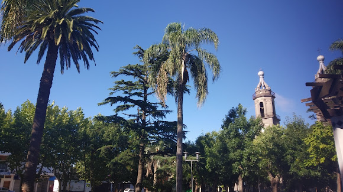

Plaza José Batlle y Ordóñez
A tres cuadras de la Vía del Tren, se encuentra la plaza principal de Las Piedras, marcando el centro de dicha ciudad.
La ciudad se ubica al sur del departamento de Canelones, sobre las costas del arroyo Las Piedras, límite con el departamento de Montevideo. Forma parte del área Metropolitana de Montevideo. Por la concentración de bodegas turísticas, Las Piedras es considerada la capital de la uva y el vino . La ciudad se destaca por la variedad de atractivos y eventos ligados con la historia de nuestro país y la producción vitivinicola. Cuenta con museos, monumentos, un hipódromo y un centro comercial.
A tres cuadras de la Vía del Tren, se encuentra la plaza principal de Las Piedras, marcando el centro de dicha ciudad.
H. Stagnari es una bodega enfocada a la producción de vinos premium, estos son elaborados con sus propias uvas provenientes de sus dos viñedos: La Puebla – Canelones (uvas blancas) y La Caballada – Salto (uvas tintas).
Se trata de un parque urbano de gran significación histórica, que fue escenario de la batalla de Las Piedras el 18 de mayo de 1811.
| Pos. | Lugar | Dist. centro |
|---|